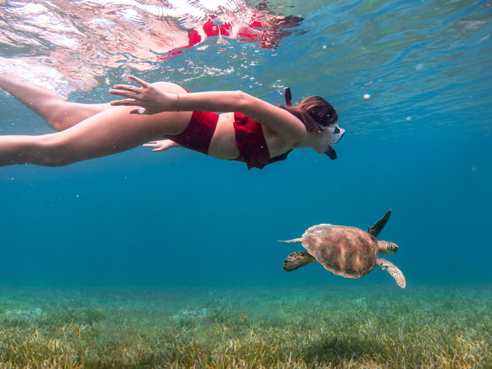
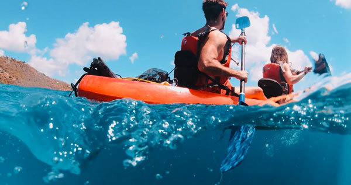
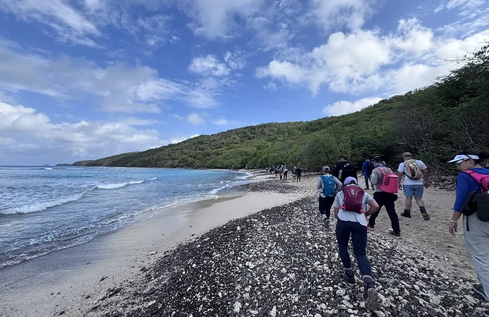

Vive Culebra
Culebra ofrece experiencias ideales para quienes buscan mar, naturaleza y tranquilidad. Sus aguas cristalinas, arrecifes, cayos y paisajes costeros la convierten en un destino perfecto para explorar más allá de la playa.
Desde snorkeling y kayak hasta recorridos naturales, Culebra permite disfrutar el ambiente caribeño de una forma sencilla, relajada y cercana a la naturaleza.
Actividades destacadas

Snorkeling
El snorkeling es una de las experiencias más populares en Culebra. En playas como Tamarindo y áreas cercanas a la Reserva Natural Canal Luis Peña, es posible observar peces tropicales, corales y tortugas marinas.
Ver playas
Kayak
El kayak permite recorrer zonas costeras tranquilas y disfrutar el paisaje desde el agua. Es una buena opción para explorar áreas naturales, observar la costa y vivir una experiencia más activa.
Explorar zonas
Exploración natural
Culebra cuenta con paisajes abiertos, miradores, zonas protegidas y espacios naturales donde se puede apreciar su lado más tranquilo. Es ideal para quienes quieren caminar, observar el entorno y conectar con la naturaleza.
Más información